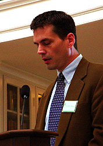

| GRIFFITH CHAUSSEE holds master's degrees in South Asian Studies and Comparative Literature. He currently teaches Urdu at the University of Virginia. He served as Associate Editor of the AUS from 1993 to 1998. |
|  | |
| PHOTO BY PHIL MCELDOWNEY | PHOTO BY PHIL MCELDOWNEY |